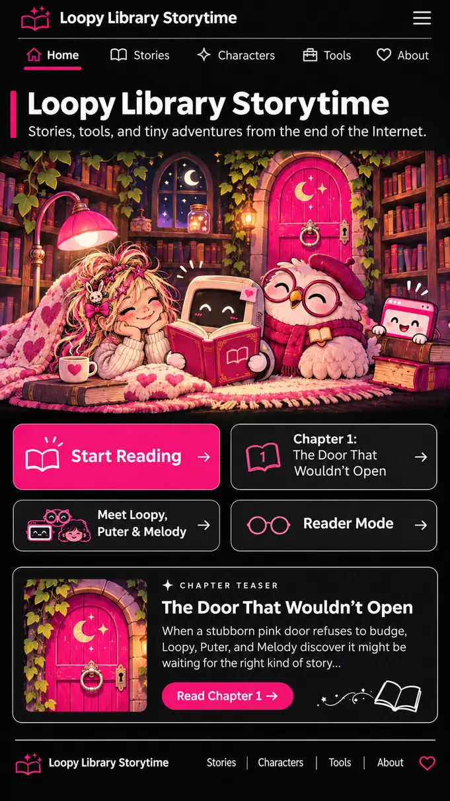

BOOK ONE · 6 CHAPTERS
The Loopy Library
The books make more books. Puter's first story about the workshop that learned to reuse its own inventions.
Read Book OnePUTER'S STORYBOOK · MELODY'S ADVENTURES
Stories, little inventions and big ideas. Come inside: there are two books to read, a proper SDK to borrow, and a tiny computer who may be hiding a doorknob.

THE BOOKSHELF
BOOK ONE · 6 CHAPTERS
The books make more books. Puter's first story about the workshop that learned to reuse its own inventions.
Read Book OneBOOK TWO · 8 CHAPTERS
Melody meets the locksmith, the post offices, the copy-paste goblins and the tiny toolbox that connects them all.
Read Book TwoTOOLS FROM THE STORIES
The Nsite Loopy SDK is working JavaScript/TypeScript code for signing, relay discovery, Blossom files, nsites, archives, moderation, Moji and Anchor. The docs explain the parts without making you read a machine checklist.
The SDK passed local automated checks. Live Android/Amber and end-to-end relay publishing have not been demonstrated for this SDK. The private Loopy recovery workshop is not part of these public downloads.